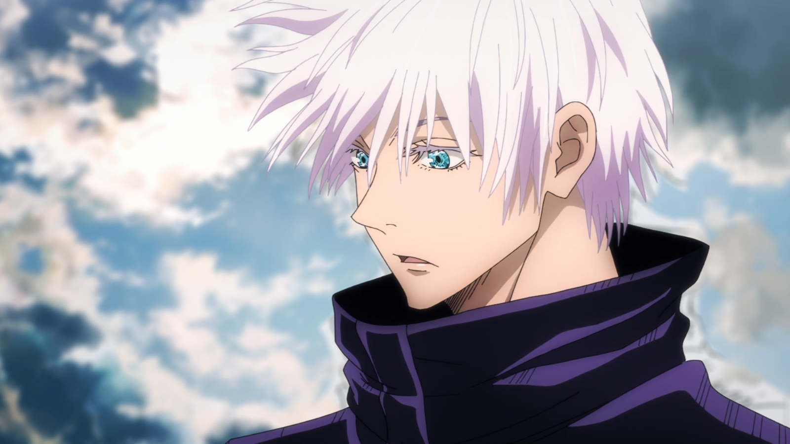
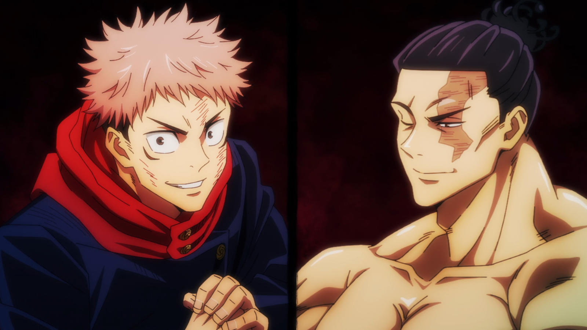
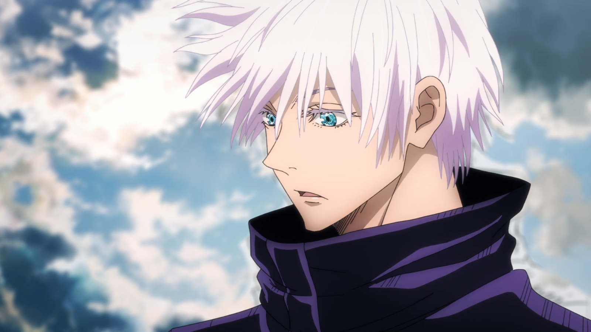
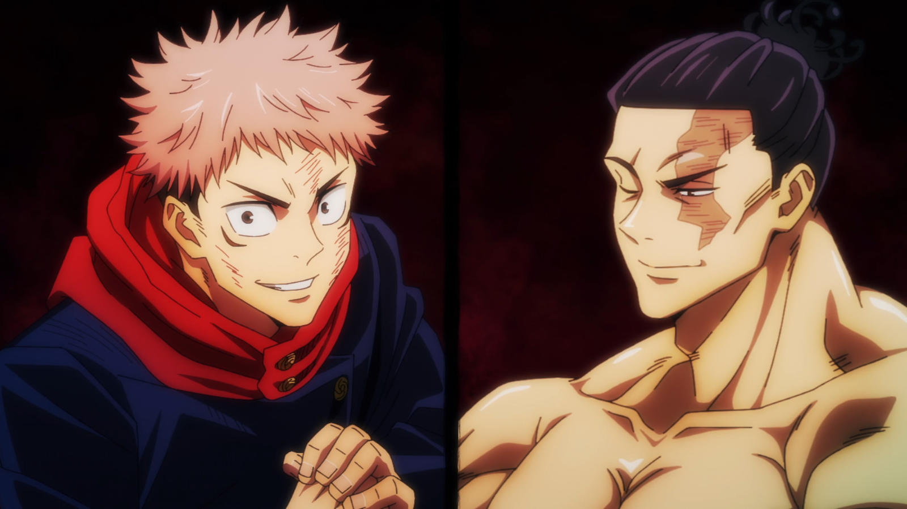

Entretendo-se ociosamente em atividades paranormais infundadas com o Clube do Ocultismo, Yuuji Itadori, um estudante do ensino médio,
passa seus dias na sala do clube ou no hospital, onde visita seu avô acamado. No entanto, esse estilo de vida tranquilo logo toma um rumo
estranho quando ele encontra sem saber um objeto amaldiçoado. Desencadeando uma série de eventos sobrenaturais, Yuuji se vê repentinamente
lançado ao mundo das Maldições—terríveis seres formados a partir da malícia e negatividade humanas—após engolir o objeto mencionado,
revelado como um dedo pertencente ao demônio Sukuna Ryoumen, o "Rei das Maldições".
Yuuji experimenta em primeira mão a ameaça que essas Maldições representam para a sociedade ao descobrir seus próprios poderes recém-adquiridos.
Introduzido na Escola Técnica de Jujutsu Metropolitana de Tóquio, ele começa a trilhar um caminho do qual não pode voltar:
o caminho de um feiticeiro de Jujutsu.


 


